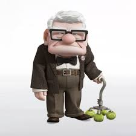
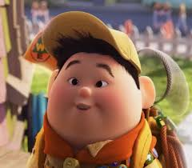
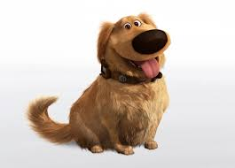
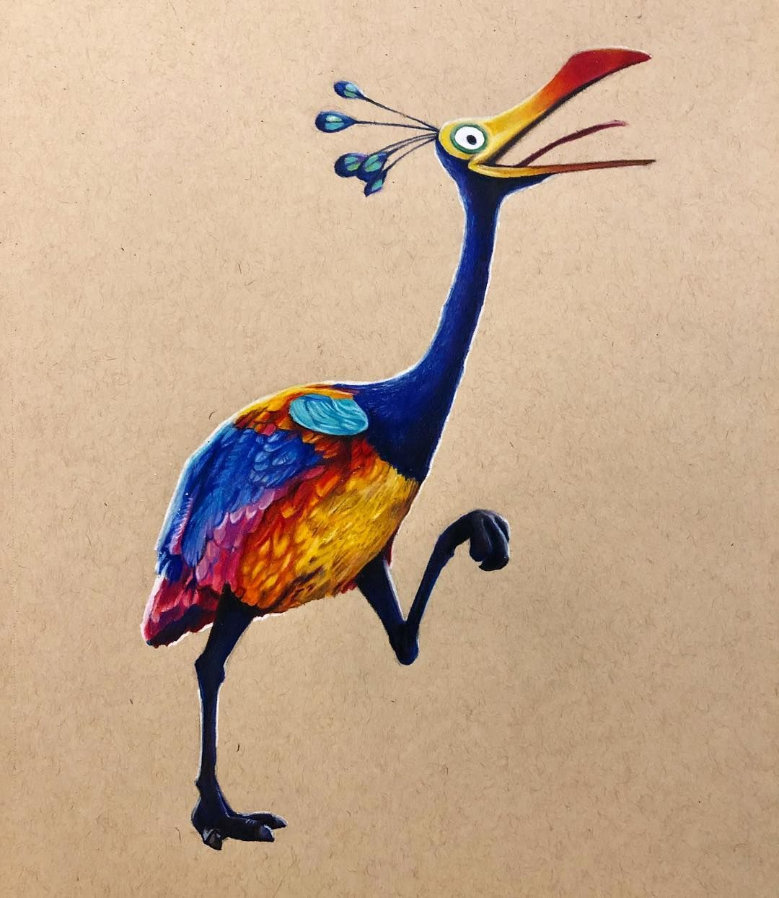

| Characters | Characteristics |
|---|---|
|  Carl Fredricksen |
Old man with white hair and a fairly square-shaped head carrying a cane. He seems like a grumpy old man but is kind and loving inside |
|  Russell |
Short and fat little boy who's always wearing a boy scout outfit. He is a very loud and hyperactive boy who is seen always unintentionally annoying Carl. |
|  Dug |
Golden retriever that can speak english through a collar given by Charles Muntz. He is a very playful and friendly dog and is seen with Carl at the end of the movie. |
|  Kevin |
Kevin is a Himalayan Monal Pheasant, he's a giant flightless bird that Russell found in Paradise falls. This bird is the one Charles Muntz has beem hunting down for 55 years. |